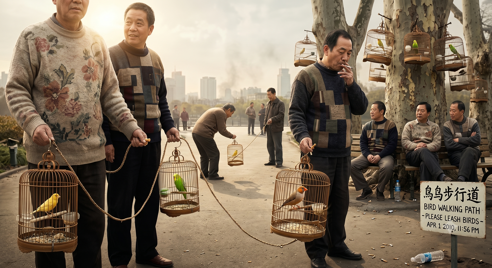

These are the People that Walk their Birds
Originally written April 2010 • Uploaded to Facebook on Apr 1, 2010, 11:56 PM

In Nanjing, it rains. It rains significantly more than I was originally hoping for. There are days when I genuinely think I’ve mistakenly landed in England rather than China, as the weather can remain completely awful for weeks at a time. But then, the sun breaks through! People immediately bare their shoulders, stubbornly keep their ugly sweaters on, and collectively decide to step outside.
Once out on the pavement, the city's favorite recreational activities include hawking massive loogies, smoking copiously, riding bicycles at an absolute snail's pace, and walking their birds. You would naturally expect people to walk their dogs, or perhaps even their cats—and they do—but their birds? There is an entire, distinct counterculture of people walking their birds here, and if you open your eyes, you will quickly notice exactly how their system operates.
These citizens navigate the streets carrying small, ornate cages housing one or two little birds. The plumage spans from your standard canary yellow to brilliant green, and muted brown with sharp orange beaks. Some of these birds talk, some of them eat, sleep, and defecate all in one swift, continuous motion, and others just hang there on the perch. It is remarkably cute and endearing. Owners walk the block with the cages dangling casually from their hands. When two practitioners cross paths, they approach one another, trade hellos, and let their respective cages approximate—allowing the birds to inspect each other much like dogs smelling one another on a leash. They will wave a slow goodbye, comment on how pleasant the weather is, and wander away.
Then, once they grow tired of carrying the weight, they will sit on park benches and chill while their cages are suspended from old, rusty nails conveniently hammered into the trunks of the trees around them. These birds, relaxing under precarious conditions on rusty metal in old bark, produce the most beautiful music when the weather behaves. For me, this avian display provides a highly relaxing perspective on life. It also offers the deeply reassuring thought that if these tiny creatures are still breathing, the urban air pollution can’t possibly be that fatal, right?
These small birds being paraded around in their wire enclosures vividly remind me of historic eras when miners would descend into the deep shafts with their canaries to ensure carbon monoxide levels were structurally safe. These birds, these people, the ugly sweaters, the heavy pollution—it is all strangely comforting. Though, I do wonder what happens if the bird suddenly dies? Do the owners panic? Do they assume that they, too, will die soon? Do they immediately pack up and move to another country? Where on earth would you even go from here? Iceland?